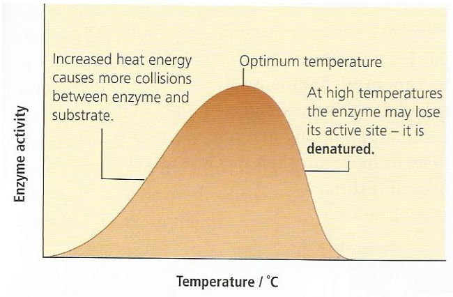
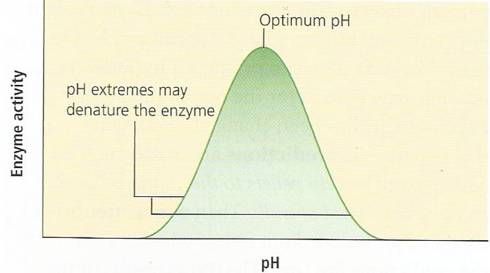

Enzymes
Author: Ms. Joey Lie (EI)
- All chemical reactions going on within a living orgaism is known as metabolism.
- Anabolic reactions build up large molecules from smaller ones and usually require an input of energy.
For example the condensation of glucose molecules into polysaccharide glycogen.
- Catabolic reactions break down large molecules into smaller ones and often release energy.
For example the breakdown of glucose into carbon dioxide and water by respiration.
- Enzymes are proteins that function as biological catalysts – (catalyst speed up reaction without themselves being changed by the reaction.
- The molecules that react in enzyme – catalysed reaction are called substrates, and the molecules produced in the reactions are products.
- There are two types of enzymes :
- intracellular enzymes : are synthesised and work inside the cell – examples : catalase (which break downharmful hydrogen peroxide in liver cells) and phosphorylase (which builds up glucose into starch in plant storage cells)
- extracellular enzymes : are made inside the cells and then released from the cell to perform their function – examples : lipase (which breaks down fats to fatty acids and glycerol) and amylase (which convert starch to maltose.
- Enzymes are specific – most enzymes work on one kind of substrate only. For example protease break down proteins but have no effect on carbodydrates or lipids, and lipase break down lipids but no effect on proteins or carbodydrates.
- The mechanism of enzyme action (the lock and key hypothesis) An enzyme is a protein, folded into a complex three – dimensional shape. The active site is the part of the enzyme that allows it to act as catalyst as shown below.
Factors affecting enzyme activity
- Temperature
- The enzyme activity increases with a rise in temperature up to a point. This is because :
- a higher temperature speeds up the movement of substrate molecules so that when they collide with the enzymes they have more energy and more likely to bind to the active site.
- the enzyme molecules also gain in energy as the temperature rises so that they begin to vibrate. Eventually the enzyme molecules vibrate so much that they become denaturated – they lose their three – dimensional shape and can no longer bind to their substrate.
- Most human enzymes have an optimum temperature around 37oC, whilst for most plants the optimum is rather lower at around 25oC.
- Each enzyme has an optimum temperature, which is a balance between these two effects, as show in the graph.

- pH
- Each enzyme has its own optimum pH.
- Pepsin is an enzyme that works in stomach, and has an optimum pH around pH 2 (very acidic).
- Amylase works in the mouth and small intestine and has an optimum pH around pH 7.5 (slightly basic).

- activators and inhibitors
- some molecules change the likelihood of an enzyme being able to bind to its substrate.
- activators make this binding more likely – for example chloride ions are essensial for the activity of salivary amylase.
- inhibitors make it difficult for the enzyme to bind to he substrate – for example cyanide ions block the active sites of enzymes involved in respiration.